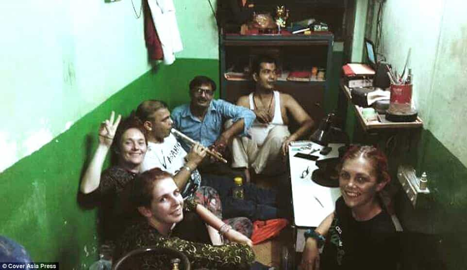

< < < Back
Feminism Is Literally Killing Women By Telling Them That 3rd World Countries Are Safer Than The West – Return Of Kings
The night before she died, Danielle had met some British tourists at Palolem.
One of them, Dave Woodruff, 37, said she was ‘free-spirited’ and ‘really interesting’ but that a group of about five [Indian] men ‘would pull her back and say, “You’re with us, remember?”.’
He told The Guardian that Danielle shrugged off the instructions…
— The Daily Mail, reporting on the events preceding Danielle McLaughlin murder in India
Feminism kills. And for Australian Elly Warren and dual British-Irish national Danielle McLaughlin it literally killed them. Years of cultural indoctrination have taught Western women that they are supposedly in constant danger at places like American college campuses, but can “find themselves” Eat, Pray, Love-style in perilous Third World countries. Even with the hazier statistics-gathering employed in poorer societies, we can easily tell that this is an unabashed lie.
Compare this happiness and safety of Danielle McLaughlin in Third World countries to the sheer terror of the History major who fears being raped by one of her male classmates during a 200-person lecture at the University of Vermont.
Danielle McLaughlin’s rape and death by strangulation in India is the most recent high-profile example of a white girl enabled by a self-infatuated professional feminist clique. Because the white male lower middle-class accountant back home, whether in North America, the United Kingdom, Europe, or Australia, is the true embodiment of all evil, women like McLaughlin are encouraged to spread their time in far-flung, poverty-stricken countries where tourists, who live like kings compared to the locals, are prime targets for petty robbery, let alone more painful crimes like mutilation, rape, or homicide.
In a development that will shock no one, McLaughlin was travelling alone. She certainly met people along the way, including the British tourists she saw shortly before she died, but for the most part did her own thing. This is quite remarkable. Here in the West, however, even a woman walking to her dorm at the University of Texas (or any other institution of higher learning) seemingly requires a SWAT team to protect her from fellow students in “rape culture” infested campuses:
In a similarly preventable tragedy, Elly Warren was raped and murdered in Mozambique, which even the leftist Guardian admits has a homicide rate around double that of the United States. And this is based on what we know, as public officials in Third World countries tend to be much less accountable and more corrupt than their Western counterparts. Plus, as I have already mentioned, statistical measurements are far less reliable and crime is probably grossly underestimated in these more indigent states. Authorities actually have an incentive to fudge the numbers, as desperately needed foreign investment, tourism, and aid often depends on the perception that public safety is improving. And far more cashed-up tourists are lucrative sources of income for local criminals of modest means.
Inexplicably, Warren’s body was found in a public change room at a location popular with backpackers. Yes, that’s right, in sub-Saharan Africa. The mind boggles at both the personal thought processes and the cultural conditioning back home in Australia that led her to this incredibly stupid life—and death—decision. Meanwhile, colleges in her native land, like the University of Melbourne, teach female students that an insidious rape culture on campus threatens to take them at any moment.

Who goes backpacking in Mozambique? We should feel for the family of Elly Warren, who was working as a volunteer for a scientific organization, but she threw herself into danger.
Thank you, Eat, Pray, Love!
The film Eat, Pray, Love, starring Julia Roberts, is both a reflection of and a further impetus for women leaving their “stifling” homes in the West for so-called spiritually-fulfilling adventures in the Third World. It is the embodiment of what Danielle McLaughlin in particular appeared to be seeking. Ironically, if you look at Roberts’ character Elizabeth Gilbert, a stereotypical career-obsessed woman, she blames her American life—and, by extension, an implicit patriarchy—for her unhappiness at the film’s beginning, rather than the feminist dogma really behind her “empowered” but miserable existence as a corporate cog.
The Roosh V Forum has duly noted that Elizabeth Gilbert recently secured a second divorce. She is childless at nearly 50 and now in a lesbian relationship, having spoken of her previous addiction to finding multitudes of men and sleeping with them:
Seduction was never a casual sport for me; it was more like a heist, adrenalizing and urgent. I would plan the heist for months, scouting out the target, looking for unguarded entries. Then I would break into his deepest vault, steal all his emotional currency and spend it on myself.
And Gilbert can add yet another job description to divorcee, late-blooming lesbian, and self-obsessed cultural appropriator: peddler of doom for women who follow her example. Not every woman can come back and write a vapid account of how she became even more narcissistic overseas than when she originally left the West. Just ask the families of Elly Warren and Danielle McLaughlin.
The “Nazi!” effect

Who wore the title of probable “rape culture location” better? This shanty office in Calcutta or the library at the University of Minnesota?
The rise of Donald Trump in the Republican primaries and caucuses, the general election campaign, and now the White House has been greeted with calls of “Nazi!,” “deplorable!,” and “racist!” towards both him and millions of his supporters. And what’s the effect, aside from leftists getting sore throats and beating up people, including from behind and the side like against Richard Spencer? For a start, these epithets become hopeless abstractions because they can be applied to pretty much anything or anyone someone doesn’t like. Still, leftists’ obsession with overgeneralizations has a much longer history, one that intersects heavily with the deaths of Elly Warren and Danielle McLaughlin.
The advent of radical feminism and the idea that all Western men are potential rapists or plain rapists has desensitized women to the true dangers both at home and in the wider world. Through SJWs linking things like a man looking at pornography to “rape culture,” actual rape, where proper evidence shows an egregious crime, becomes rapidly devoid of its true meaning. Such madness has deleterious consequences, like men approaching women in some British metropolitan areas being called “hate criminals.”
Nevertheless, the results of this mind-warping also hit women–and very badly. After being repeatedly told they have more to fear in the First World than the Third, they are primed to meet the sort of grisly ends that found Elly Warren and Danielle McLaughlin.
Read More: Western Feminists Continue To Exploit Women In Developing Countries For Their Own Gain